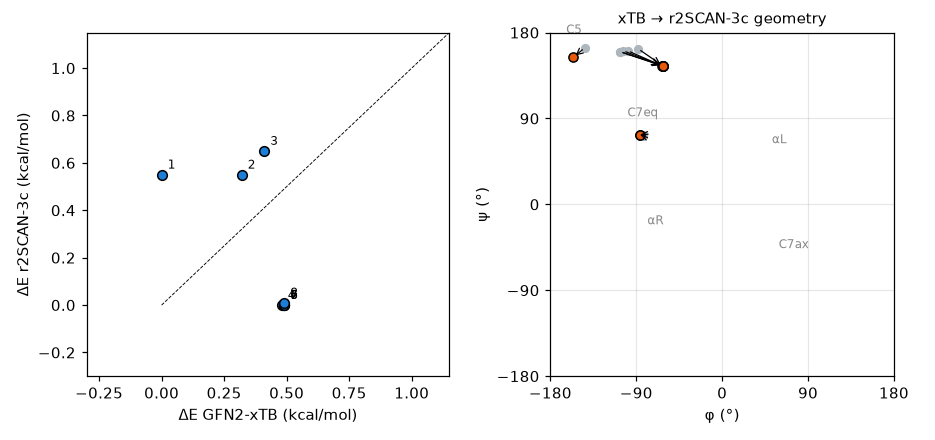

Why two stages
Sweeping conformational space directly with DFT is too expensive, and xTB energies alone are too inaccurate to draw conclusions from. So xTB collects a generous set of candidates, and only the survivors are recomputed with DFT to set the ranking. xTB answers "which structures exist"; DFT answers "which of them is most stable".
The whole workflow
- Optimise the starting structure with xtb (chapter 2).
- Build the ensemble with CREST (chapter 5).
- Split the conformers inside the energy window into separate xyz files.
- Reoptimise each with DFT; here ORCA with r2SCAN-3c and CPCM(water).
- Re-rank by DFT energy and, if needed, run frequencies on the top few to compare free energies.
Splitting the ensemble
crest_conformers.xyz is multi-frame xyz, so a few lines split it.
lines = open("crest_conformers.xyz").read().splitlines()
n = int(lines[0])
frames = [lines[i:i + n + 2] for i in range(0, len(lines), n + 2)]
for k, fr in enumerate(frames[:8], 1):
open(f"conf{k:02d}.xyz", "w").write("\n".join(fr) + "\n")DFT reoptimisation
# conf01.inp ... conf08.inp
! r2SCAN-3c Opt CPCM(water)
%pal nprocs 8 end
%maxcore 1500
* xyzfile 0 1 conf01.xyzr2SCAN-3c is a composite method with good geometries and conformer energies for its cost (chapter 12 of the ORCA guide). When conformers sit within 1 kcal/mol of each other and the order matters, add a final single point at a higher level.
Result: how much the ranking changes
The top 8 CREST conformers (within 0.49 kcal/mol at the GFN2 level) were reoptimised one by one with ORCA 6.1.0. All 8 terminated normally, taking 23–40 optimisation cycles. On 8 cores each conformer took 8–14 minutes, 86 minutes in total run back to back, more than 20 times the whole CREST search (3 min 45 s).
| CREST rank | ΔE GFN2 (kcal/mol) | ΔE r2SCAN-3c (kcal/mol) | DFT rank | φ / ψ change |
|---|---|---|---|---|
| 1 | 0.00 | 0.55 | 6 | −83/73 → −86/73 |
| 2 | 0.32 | 0.55 | 7 | −83/72 → −86/73 |
| 3 | 0.41 | 0.65 | 8 | −144/164 → −156/154 |
| 4 | 0.48 | 0.00 | 3 | −104/161 → −62/145 |
| 5 | 0.49 | 0.00 | 1 | −107/160 → −62/145 |
| 6 | 0.49 | 0.00 | 2 | −107/160 → −62/145 |
| 7 | 0.49 | 0.00 | 4 | −99/161 → −63/145 |
| 8 | 0.49 | 0.01 | 5 | −88/163 → −62/145 |

C7eq (CREST ranks 1 and 2), the lowest structure at the GFN2 level, rose to 0.55 kcal/mol with r2SCAN-3c, and an extended structure took the lowest place. CREST ranks 4–8, whose GFN2 φ/ψ differed slightly around −88° to −107°/160°, all ended up at a single structure at −62°/145° after DFT optimisation, in the region called polyproline II (PII) or β. Their heavy-atom RMSD is 0.00 Å and their energies agree within 0.01 kcal/mol, so DFT ranks 1–5 in the table are in effect the same structure computed five times. CREST ranks 1 and 2 likewise merged into one C7eq structure (RMSD 0.01 Å). C5 (CREST rank 3) moved a little, to −156°/154°, and stayed at 0.65 kcal/mol. The 8 inputs gave only three distinct DFT minima.
The order flipped, but all three structures lie within 0.7 kcal/mol. That is about the size of the typical error of a method like r2SCAN-3c, so this calculation alone does not show that PII/β is the most stable structure in water. Also, what was compared here is electronic energies in a continuum solvent only, without zero-point energy, thermal corrections or entropy. Alanine dipeptide prefers different structures in the gas phase and in water, and in water PII/β and αR are known to be well populated. C7eq relies on an intramolecular hydrogen bond and can come out too favourable in a continuum model that has no hydrogen bonds to water. For quantitative populations, free-energy corrections and explicit solvent need to be considered. What this example does show clearly is that the GFN2 ranking cannot be taken at face value, and that several structures in an xTB ensemble can collapse into one on DFT reoptimisation.
Practical tips
- Conformers that merge during reoptimisation: in this example 8 became 3. Distinct xTB minima can converge to the same DFT structure, so remove duplicates again among the DFT structures by RMSD (
crest --cregen). - How many: select by energy window, not a fixed top N. Conformers within 3–6 kcal/mol at the GFN2 level are usually passed on to DFT. Here the top 8 were packed within 0.49 kcal/mol, so C7ax (1.13 kcal/mol) and the αR-side conformers never reached DFT. Given that relative energies moved by about 0.5 kcal/mol in DFT, they should have been included.
- Electronic versus free energies: when the ranking is decided within 1 kcal/mol, run frequencies on the remaining minima and compare free energies. After merging there are only a few minima left, so the cost is modest.
- Automation: CENSO automates this in several stages and is worth considering once there are dozens of conformers.